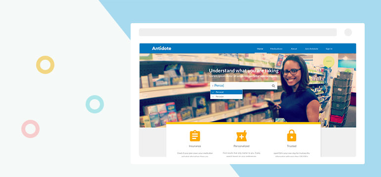

-
Antidote
2015. Web. Research. UX Design. Visual Design
Antidote was a 1-week competition hosted by 18F. In this project, I was responsible for UX and UI design. My work included utilizing surveys and interviews to get initial requirement, generate prototypes and deliver final prototypes based on usability tests, create high-fidelity mockups and quality assurance the final implementation. Due to a bunch of reasons we didn’t get the prize but in this project we’ve all experienced very agile and fun teamwork.
The problem
The problem raised by 18F is to use FDA’s medication data to present the data in a meaningful way.
The progress
Look at the FDA’s database together and analyze what data we have; All team members sketch in 15 minutes and vote for the best; Create surveys to get people’s demand; Pick target users to interview; Generate prototype; User test with the people interviewed to see if meet their expectation; In the meantime review within team to get feedback; Iterate prototype based on feedback from both sides; Confirm prototype with testers and team and finalize version; Deliver to dev team and start to create mockups.
The solution
Based on the database and interview with people. We finally landed on designing a website that provides medication data for patients to view the medication information and add their review to it, like a medication yelp.
Here's the wireframe:

here are the final mockups: